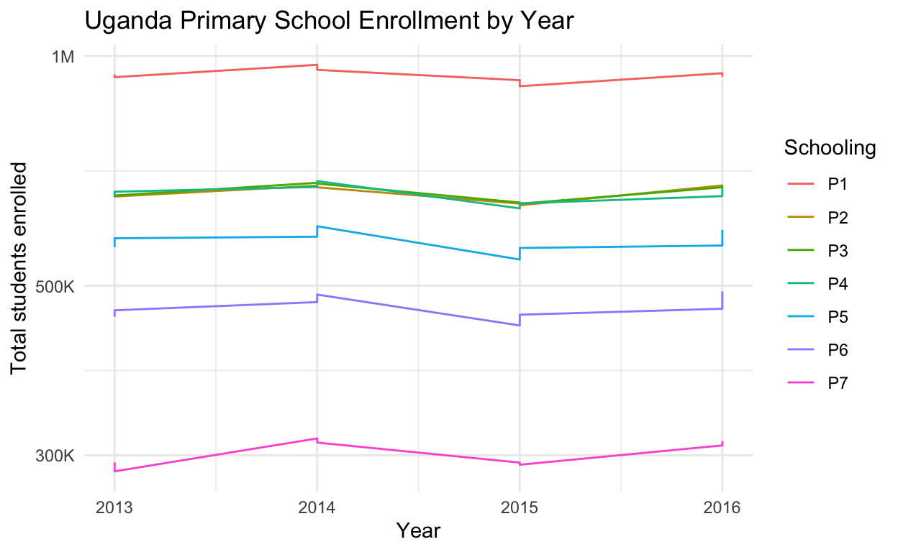
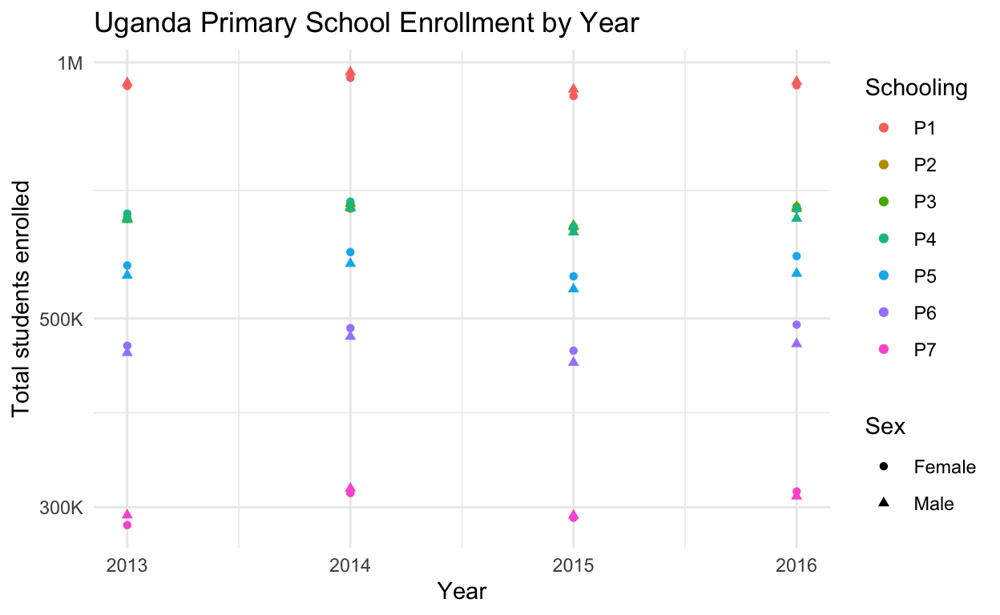
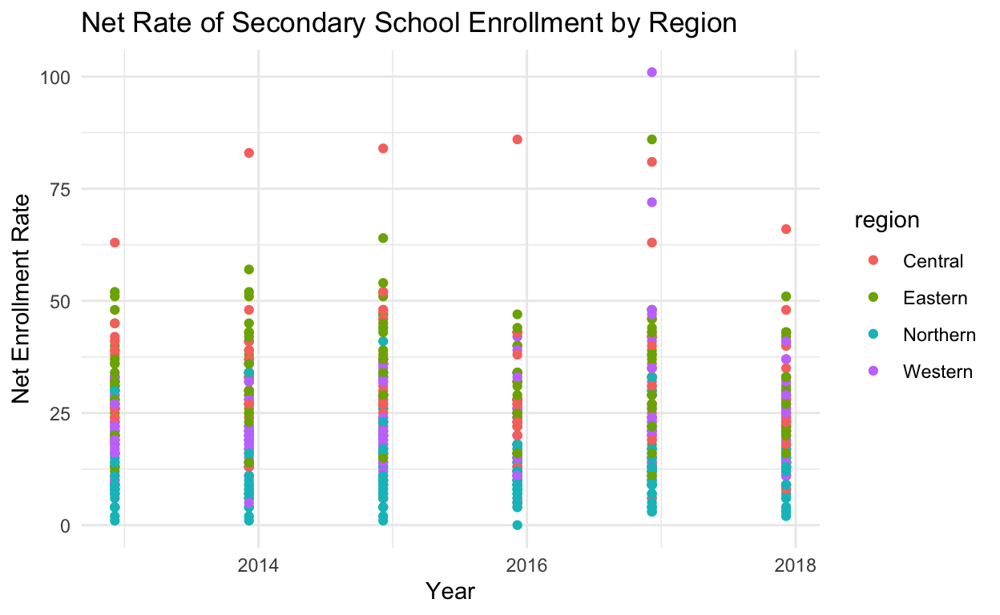
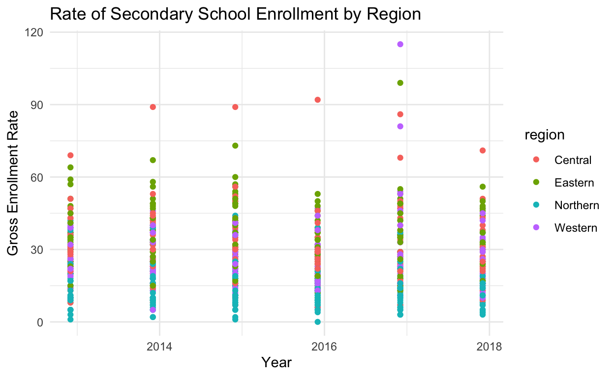

A short dive into the stastics surronding Primary and secondary education in Uganda
This blog post is a project for my EDS222, Intro to Statistics for Environmental Data Science. I will be diving into the statistics of Ugandan school age children, and seeing if there is an correlation between the district and how likely kids are to be enrolled in school. This project is very near to me as I spent over four years living in Africa, most of that time specifically in Uganda. I lived there because my mother founded a non-profit organization in Uganda in 2006 called African Women Rising that aims to empower women after war through, literacy, business skills, girls education, and agriculture. I have grown up with this in mind, and seen first hand the disparity in education systems based on region in Uganda. I lived that disparity as I was a child going to primary school in the capital city, at an international school, while my parents worked in areas with schools that had little to no money, resources, or teachers. So to say this has always been an interest of mine is a bit of an understatement.
Even though there has been great efforts, and some results in the fight against global poverty, sub-Saharan Africa is the only region consistently failing in these attempts. Across the continent indicators on hunger, displacement, access to health, food, income and education consistently fair at the bottom of global rankings.
One in four people across sub-Saharan Africa remain under nourished. 47% of the population lives on $1.90 or less. The main cause of this is lack of access to food, or capital to buy food. Conflict often interrupts people’s ability to earn an income or grow their own food. This is made harder by the climate crisis, as it disproportionately affected vulnerable populations through challenges such as erosion, desertification, deforestation, and most importantly, drought and water shortages keep people from building sustainable livelihoods.
To make matters even more complicated, Sub-Saharan Africa holds more than 26% of the world’s refugee population, of which half are children.
Hosting 3.7 million refugees and 11.4 internally displaced people overwhelms already strained economies. Sub-Saharan Africa accounts for 47% of out-of-school children worldwide. Only 30% of boys and 25% of girls are enrolled in secondary school, this number drops even lower when you focus of the more rural districts. Children are kept at home due to financial difficulties, lack of schools and teachers, poor sanitary facilities at schools, social norms, household obligations in the home, child labor and child marriages.
Within Uganda specifically, there are over a million South Sudanese refugees that are crossing the border and living in Ugandan refugee camps, around 80% of these are women and children. With so many children coming into these camps, education is very difficult. It is not uncommon to see classrooms filled with multiple ages, grades and 200 students for every one teacher. My original hope for this project was to include data from these refugee camps, and compare it to the districts that do not have refugees. Unfortunately, getting raw or even cleaned data on teh refugee stats was quite difficult. None of the major NGOs working in Uganda freely share their raw data, or if they do, it is hidden in PDFs and at this time I do not have the skills to scrap them.
Additionally within Uganda, 26% of the population live in urban settings and 74% live in rural settings. The rural settings tend to have less infrastructure for education. Most of these rural areas are in the Northern and Western regions.
Knowing all of this, I was very interested in seeing if I could find some of the data myself and get similar results. I also wanted to see if there was a connection to food price and education. I separated my interests into the following questions:
- Is there any change in enrollment as age (or by proxy school level) increases?
- Are there differences in male and female enrollment rates over time?
- Is there a difference in enrollment by district or region?
- Does food price have an effect on enrollment?
The rest of the post will walk you through my steps and the problems I encountered.
This step proved to be much harder than anticipated, my original thought was that I would be able to find at least some relevant data from one of the many organizations that does work in Uganda. However, while I did find some great info graphics, figures, and statistics, none of the bigger NGOs I was looking at had any raw data I could work with. I then went to World Bank Data, World Food Program, and The Uganda Bureau of Statistics. From these sites I was able to scrape together very minimal data.
I was able to find four years of data (2013-2016) that looks at the total number of Ugandan children, split by gender, who attend grades Primary 1 through Primary 7 respectively. Primary 1 is the same as Kindergarten, Primary 2 as first grade, and so on. Then I found a data set that had the Gross Enrollment Rate (GER), and Net Enrollment Rate for Secondary school, separated by district. Which I then also turned into region so I could compare more broadly.
#primary school aged kids
primary <-read_csv(here("_posts", "2021-12-01-uganda-education-statistics", "data", "Primary_13-16.csv"))
#Uganda Bureau of Stats
ug_secondaryGER_raw <-read_csv(here("_posts", "2021-12-01-uganda-education-statistics", "data", "Secondary_GER_Rates.csv"),
na = "-",
col_types = cols(`2012` = col_number(),
`2013` = col_number(),
`2014` = col_number(),
`2015` = col_number(),
`2016` = col_number(),
`2017` = col_number())) %>%
pivot_longer(!District, names_to = "Years", values_to = "GER") %>%
mutate(region = case_when(
District %in% c("Abim","Adjumani", "Agago", "Alebtong", "Amolatar", "Amudat", "Amuru", "Apac", "Arua", "Dokolo", "Gulu", "Kaabong", "Kitgum", "Koboko" , "Kole", "Kotido", "Lamwo", "Lira", "Maracha", "Moroto", "Moyo", "Nakapiripirit", "Napak", "Nebbi", "Nwoya", "Otuke", "Oyam", "Pader", "Yumbe", "Zombo") ~ "Northern",
District %in% c("Buikwe", "Bukomansimbi", "Butambala", "Buvuma", "Gomba", "Kalangala", "Kalungu", "Kampala", "Kasanda", "Kayunga", "Kiboga", "Kyankwanzi", "Kyotera", "Luweero", "Lwengo", "Lyantonde", "Masaka", "Mityana", "Mpigi", "Mubende", "Mukono", "Nakaseke", "Nakasongola", "Rakai", "Sembabule", "Wakiso") ~ "Central",
District %in% c("Amuria", "Budaka", "Bududa", "Bugiri", "Bugweri", "Bukedea", "Bukwo", "Bulambuli", "Busia", "Butaleja", "Butebo" , "Buyende" , "Iganga" , "Jinja" ,"Kaberamaido", "Kaliro" , "Kamuli" , "Kapchorwa" , "Kapelebyong" ,"Katakwi" , "Kibuku", "Kumim", "Kween" , "Luuka", "Manafwa" , "Mayuge", "Mbale", "Namayingo", "Namisindwa", "Namutumba" , "Ngora" , "Pallisa" , "Serere" , "Sironko" , "Soroti" ,"Tororo" ) ~ "Eastern",
District %in% c("Buhweju", "Buliisa","Bundibugyo","Bunyangabu","Bushenyi","Hoima" ,"Ibanda",
"Isingiro" ,"Kabale" , "Kabarole" ,"Kagadi" ,"Kakumiro" ,"Kamwenge","Kanungu",
"Kasese" ,"Kazo", "Kibaale","Kikuube" ,"Kiruhura","Kiryandongo", "Kisoro", "Kitagwenda", "Kyegegwa", "Kyenjojo", "Masindi" ,"Mbarara","Mitooma","Ntoroko" , "Ntungamo" , "Rubanda" , "Rubirizi" , "Rukiga" , "Rukungiri" , "Rwampara" , "Sheema") ~ "Western"))
#trying to get years into a date
ug_secondaryGER <- ug_secondaryGER_raw %>%
mutate(Years = as.Date(Years, format = "%Y"))
ug_secondaryNER_raw <-read_csv(here("_posts", "2021-12-01-uganda-education-statistics", "data", "Secondary_NER_Rates.csv"),
na = "-",
col_types = cols(`2012` = col_number(),
`2013` = col_number(),
`2014` = col_number(),
`2015` = col_number(),
`2016` = col_number(),
`2017` = col_number())) %>%
pivot_longer(!District, names_to = "Years", values_to = "NER") %>%
mutate(region = case_when(
District %in% c("Abim","Adjumani", "Agago", "Alebtong", "Amolatar", "Amudat", "Amuru", "Apac", "Arua", "Dokolo", "Gulu", "Kaabong", "Kitgum", "Koboko" , "Kole", "Kotido", "Lamwo", "Lira", "Maracha", "Moroto", "Moyo", "Nakapiripirit", "Napak", "Nebbi", "Nwoya", "Otuke", "Oyam", "Pader", "Yumbe", "Zombo") ~ "Northern",
District %in% c("Buikwe", "Bukomansimbi", "Butambala", "Buvuma", "Gomba", "Kalangala", "Kalungu", "Kampala", "Kasanda", "Kayunga", "Kiboga", "Kyankwanzi", "Kyotera", "Luweero", "Lwengo", "Lyantonde", "Masaka", "Mityana", "Mpigi", "Mubende", "Mukono", "Nakaseke", "Nakasongola", "Rakai", "Sembabule", "Wakiso") ~ "Central",
District %in% c("Amuria", "Budaka", "Bududa", "Bugiri", "Bugweri", "Bukedea", "Bukwo", "Bulambuli", "Busia", "Butaleja", "Butebo" , "Buyende" , "Iganga" , "Jinja" ,"Kaberamaido", "Kaliro" , "Kamuli" , "Kapchorwa" , "Kapelebyong" ,"Katakwi" , "Kibuku", "Kumim", "Kween" , "Luuka", "Manafwa" , "Mayuge", "Mbale", "Namayingo", "Namisindwa", "Namutumba" , "Ngora" , "Pallisa" , "Serere" , "Sironko" , "Soroti" ,"Tororo" ) ~ "Eastern",
District %in% c("Buhweju", "Buliisa","Bundibugyo","Bunyangabu","Bushenyi","Hoima" ,"Ibanda",
"Isingiro" ,"Kabale" , "Kabarole" ,"Kagadi" ,"Kakumiro" ,"Kamwenge","Kanungu",
"Kasese" ,"Kazo", "Kibaale","Kikuube" ,"Kiruhura","Kiryandongo", "Kisoro", "Kitagwenda", "Kyegegwa", "Kyenjojo", "Masindi" ,"Mbarara","Mitooma","Ntoroko" , "Ntungamo" , "Rubanda" , "Rubirizi" , "Rukiga" , "Rukungiri" , "Rwampara" , "Sheema") ~ "Western"))
#trying to get years into a date
ug_secondaryNER <- ug_secondaryNER_raw %>%
mutate(Years = as.Date(Years, format = "%Y"))
Now that I found some data, I wanted to load it in R and run some very basic visualizations to see if there were any apparent trends
# plotting the Primary school data
ggplot(data = primary, aes(x = Year, y = Number, col = Schooling)) +
geom_line() +
theme_minimal() +
scale_y_log10(
"Total students enrolled",
labels = scales::label_number_si()) +
labs(x = "Year",
y = "Total students enrolled",
title = "Uganda Primary School Enrollment by Year")

Figure 1. Total enrollment rate for Primary 1 - Primary 7 (Kindergarten - 6th grade) for Uganda. The general trend shows that as the grade level increases there is a decrease in the total number of students enrolled
Figure 1 shows us the total enrollment rate for P1-P7 (Kindergarten through 6th grade) for Uganda. The general trend shows that as the grade level increases there is a decrease in the total number of students enrolled. This is consistent with trends in the literature, where in many districts as children grow older they are expected to stay home and work or take care of children. The literature states that this is even more apparent for girls. The main barrier for sending children to school is poverty, as parents are not able to afford to pay for school fees. However, even in families where funds are available girls still fail to advance academically. Girls are expected to help with household chores and their irregular attendance at school leads to a failure in passing year-end exams. Not passing means they are held back and must repeat a grade. Once a girl starts menstruating lack of access to menstrual pads can lead to more days missed and before long many girls drop out completely. With few other options the trend is for girls to marry early and have children at a young age. These children are in turn less likely to complete primary education and the perpetuation of the issue continues. If we look at the figure below we can start to see that, at least for this data set, this might not be true. You can see that the triangles that represent males are more typically below the circles that represent females.
ggplot(data = primary, aes(x = Year, y = Number, col = Schooling )) +
geom_point(aes(shape=Sex, color=Schooling)) +
theme_minimal() +
scale_y_log10(
"Total students enrolled",
labels = scales::label_number_si()) +
labs(x = "Year",
y = "Total students enrolled",
title = "Uganda Primary School Enrollment by Year ")

Figure 2. Total enrollment rate for Primary 1 - Primary 7 (Kindergarten - 6th grade) for Uganda. The general trend shows that as the grade level increases there is a decrease in the total number of students enrolled. The added shapes represent the gender of the students.
I was worried that the trends here would not be significant as there is only four years of data, however the trends seem to be very consistent across all four year, with very little variation. Leading me to believe that this is the true trend.
The next two visualization plots show the Enrollment Rate in Secondary school by region.

Figure 3. Net rate of secondary school enrollment (NER) by region, each color represents a different region, with the Northern region consecutively having the lowest rates. The NER is the number of students of the theoretical school-age group for a given level of education, expressed as a percentage of the total population in that age group.
First we have the Net Enrollment rate, The NER is the number of students of the theoretical school-age group for a given level of education, expressed as a percentage of the total population in that age group. The theoretical maximum value is 100%. However, Net Enrollment Rates may exceed 100% due to inconsistencies between population and enrollment data, this can been seen in our 2017 data, where one district in the Northern region is slightly over 100.

Figure 4. Gross rate of secondary school enrollment (GER) by region, each color represents a different region, with the Northern region consecutively having the lowest rates.The GER is the number of pupils enrolled in a given level of education, regardless of age, expressed as a percentage of the population in the theoretical age group for the same level of education.
The Gross Enrollment Rate is the number of pupils enrolled in a given level of education, regardless of age, expressed as a percentage of the population in the theoretical age group for the same level of education. When compared next to the NER, we can see how the difference between the two ratios highlights the incidence of under-aged and over-aged enrollment. While the pattern seems to have stayed very similar between the two plots, we can see that for the GER plot the y axis has increased, now it seems there are more students enrolled in each district. But as mentioned above this takes into account any students who are repeating a grade, younger than the average, or older than the average. As many students get pulled out of school for various reasons there is a trend of not passing teh end of year exams that allow them to continue on. Without proper interference this trend can form a viscous cycle, where students are held back for multiple years, and then ultimately taken out of school because their parents do not see the return on the investment of sending them. They are more valuable for the parent at home.
The second main trend we can see here is that the Northern region is much lower than the Central region. This is as expected as the Northern region is rural, and is historically lower income. The Central region is where most of the nations urban cities are, and is where the capital city, Kampala, is.
First I wanted to look at the Primary school data, to answer my first question, is there any change in enrollment as age (or by proxy school level) increases? To do this I created a model that looked to see if there was a significant change in enrollment as schooling increased.
| Estimate | Std. Error | t value | Pr(>|t|) | |
|---|---|---|---|---|
| (Intercept) | 943393.1 | 5925.705 | 159.2035 | 0 |
| SchoolingP2 | -282412.5 | 8380.212 | -33.6999 | 0 |
| SchoolingP3 | -279910.0 | 8380.212 | -33.4013 | 0 |
| SchoolingP4 | -283728.1 | 8380.212 | -33.8569 | 0 |
| SchoolingP5 | -371490.0 | 8380.212 | -44.3294 | 0 |
| SchoolingP6 | -475472.5 | 8380.212 | -56.7375 | 0 |
| SchoolingP7 | -641661.8 | 8380.212 | -76.5687 | 0 |
For every year there was a significant decrease in the number of students enrolled, holding all other grade levels constant. The intercept here is Kindergarten, Where you start with an average of 943393 kids enrolled, and then as you increase by one year you can see that enrollment rates drop as you hold each grade level constant, at a decreasing rate. The adjusted r-squared value for this is 99%, which states that or model is explaining a lot of the data, however I am skeptical as this is a very small data set and I know there has to be more effecting the total enrollment, not just the grade level.
To take this a step further and start looking at my second question, are there differences in male and female enrollment rates over time? I added a gender variable to this model.
| Estimate | Std. Error | t value | Pr(>|t|) | |
|---|---|---|---|---|
| (Intercept) | 945615.9 | 6335.841 | 149.2487 | 0.000 |
| SchoolingP2 | -282412.5 | 8381.529 | -33.6946 | 0.000 |
| SchoolingP3 | -279910.0 | 8381.529 | -33.3961 | 0.000 |
| SchoolingP4 | -283728.1 | 8381.529 | -33.8516 | 0.000 |
| SchoolingP5 | -371490.0 | 8381.529 | -44.3225 | 0.000 |
| SchoolingP6 | -475472.5 | 8381.529 | -56.7286 | 0.000 |
| SchoolingP7 | -641661.8 | 8381.529 | -76.5566 | 0.000 |
| SexMale | -4445.5 | 4480.116 | -0.9923 | 0.326 |
When looking at the results, we can see that there is a decrease in the intercept by almost 4,500 students every year, if you are male. This was not what I was expecting to see, as in many of my specific districts of interest this is the opposite case. However, there are two things I believe to be influencing this. The first is that this is a very small sample size, and the second is that this is data for Uganda as a whole, so some of the nuances I was hoping to look at are not available. This is also not a statically significant finding, as we fail to reject the null hypothesis that sex has no effect on schooling, as our p-value is 0.326.
Now that I knew that there are less children enrolled in the higher grade levels, I wanted to look at enrollment by district and region to answer my third question. As a reminder, the data I was able to find for this is the Gross and Net enrollment rate for secondary school (grades seven, eight, and nine) across all districts.
| Estimate | Std. Error | t value | Pr(>|t|) | |
|---|---|---|---|---|
| (Intercept) | 57.1786 | 13.4745 | 4.2435 | 0.0000 |
| regionEastern | 2.6731 | 1.4809 | 1.8051 | 0.0715 |
| regionNorthern | -17.0915 | 1.4944 | -11.4367 | 0.0000 |
| regionWestern | -4.5571 | 1.5315 | -2.9755 | 0.0030 |
| Years | -0.0015 | 0.0008 | -1.8965 | 0.0583 |
As seen in the table above, every region has a significant change in the enrollment rate compared to the other regions, except for the Eastern region.
I also wanted to see if year has an effect on enrollment, as we would hope that as time goes on, the overall enrollment rates increase. We we add in the year variable to the model there seems to be a slight downward trend that is almost statically significant. However, not enough to have a concrete answer. If there were more data points I would have higher confidence but considering the data, I do not want to make any broad statements.
The model below shows the GER for every district
| Estimate | Std. Error | t value | Pr(>|t|) | |
|---|---|---|---|---|
| (Intercept) | 28.6667 | 3.0324 | 9.4535 | 0.0000 |
| DistrictAdjumani | -19.3333 | 4.2885 | -4.5082 | 0.0000 |
| DistrictAgago | -15.8333 | 4.2885 | -3.6921 | 0.0002 |
| DistrictAlebtong | -20.0000 | 4.2885 | -4.6637 | 0.0000 |
| DistrictAmolatar | -13.5000 | 4.2885 | -3.1480 | 0.0017 |
| DistrictAmudat | -27.0000 | 4.2885 | -6.2960 | 0.0000 |
| DistrictAmuria | -12.5000 | 4.2885 | -2.9148 | 0.0037 |
| DistrictAmuru | -15.3333 | 4.2885 | -3.5755 | 0.0004 |
| DistrictApac | -21.5000 | 4.2885 | -5.0135 | 0.0000 |
| DistrictArua | -9.5000 | 4.2885 | -2.2152 | 0.0271 |
| DistrictBudaka | 15.1667 | 4.2885 | 3.5366 | 0.0004 |
| DistrictBududa | -7.8333 | 4.2885 | -1.8266 | 0.0683 |
| DistrictBugiri | -5.5000 | 4.2885 | -1.2825 | 0.2002 |
| DistrictBuhweju | -11.5000 | 4.2885 | -2.6816 | 0.0075 |
| DistrictBuikwe | 1.3333 | 4.2885 | 0.3109 | 0.7560 |
| DistrictBukedea | -3.6667 | 4.2885 | -0.8550 | 0.3929 |
| DistrictBukomansimbi | -0.8333 | 4.2885 | -0.1943 | 0.8460 |
| DistrictBukwo | 25.1667 | 4.2885 | 5.8685 | 0.0000 |
| DistrictBulambuli | 7.0000 | 4.2885 | 1.6323 | 0.1032 |
| DistrictBuliisa | -13.0000 | 4.2885 | -3.0314 | 0.0025 |
| DistrictBundibugyo | -13.1667 | 4.2885 | -3.0703 | 0.0022 |
| DistrictBunyangabu | -3.6667 | 8.0230 | -0.4570 | 0.6478 |
| DistrictBushenyi | 17.5000 | 4.2885 | 4.0807 | 0.0001 |
| DistrictBusia | 7.8333 | 4.2885 | 1.8266 | 0.0683 |
| DistrictButaleja | -0.6667 | 4.2885 | -0.1555 | 0.8765 |
| DistrictButambala | 54.0000 | 4.2885 | 12.5919 | 0.0000 |
| DistrictButebo | 4.3333 | 8.0230 | 0.5401 | 0.5893 |
| DistrictBuvuma | -20.5000 | 4.2885 | -4.7803 | 0.0000 |
| DistrictBuyende | -5.3333 | 4.2885 | -1.2436 | 0.2141 |
| DistrictDokolo | -16.5000 | 4.2885 | -3.8475 | 0.0001 |
| DistrictGomba | -8.0000 | 4.2885 | -1.8655 | 0.0626 |
| DistrictGulu | 0.0000 | 4.2885 | 0.0000 | 1.0000 |
| DistrictHoima | -5.3333 | 4.2885 | -1.2436 | 0.2141 |
| DistrictIbanda | 8.3333 | 4.2885 | 1.9432 | 0.0525 |
| DistrictIganga | 20.8333 | 4.2885 | 4.8580 | 0.0000 |
| DistrictIsingiro | -12.6667 | 4.2885 | -2.9537 | 0.0033 |
| DistrictJinja | 16.8333 | 4.2885 | 3.9253 | 0.0001 |
| DistrictKaabong | -24.5000 | 4.2885 | -5.7130 | 0.0000 |
| DistrictKabale | 16.8333 | 4.2885 | 3.9253 | 0.0001 |
| DistrictKabarole | 10.8333 | 4.2885 | 2.5262 | 0.0118 |
| DistrictKaberamaido | -8.3333 | 4.2885 | -1.9432 | 0.0525 |
| DistrictKagadi | -3.6667 | 8.0230 | -0.4570 | 0.6478 |
| DistrictKakumiro | -13.6667 | 8.0230 | -1.7034 | 0.0890 |
| DistrictKalangala | -17.3333 | 4.2885 | -4.0419 | 0.0001 |
| DistrictKaliro | 11.6667 | 4.2885 | 2.7205 | 0.0067 |
| DistrictKalungu | 20.5000 | 4.2885 | 4.7803 | 0.0000 |
| DistrictKampala | 5.1667 | 4.2885 | 1.2048 | 0.2288 |
| DistrictKamuli | 4.3333 | 4.2885 | 1.0105 | 0.3127 |
| DistrictKamwenge | -8.6667 | 4.2885 | -2.0209 | 0.0438 |
| DistrictKanungu | 4.8333 | 4.2885 | 1.1271 | 0.2602 |
| DistrictKapchorwa | 23.8333 | 4.2885 | 5.5576 | 0.0000 |
| DistrictKasese | -2.6667 | 4.2885 | -0.6218 | 0.5343 |
| DistrictKatakwi | -12.5000 | 4.2885 | -2.9148 | 0.0037 |
| DistrictKayunga | 1.6667 | 4.2885 | 0.3886 | 0.6977 |
| DistrictKibaale | 7.8333 | 4.2885 | 1.8266 | 0.0683 |
| DistrictKiboga | -1.5000 | 4.2885 | -0.3498 | 0.7266 |
| DistrictKibuku | 7.8333 | 4.2885 | 1.8266 | 0.0683 |
| DistrictKiruhura | -12.3333 | 4.2885 | -2.8759 | 0.0042 |
| DistrictKiryandongo | -6.3333 | 4.2885 | -1.4768 | 0.1403 |
| DistrictKisoro | -5.5000 | 4.2885 | -1.2825 | 0.2002 |
| DistrictKitgum | 7.6667 | 4.2885 | 1.7877 | 0.0744 |
| DistrictKoboko | -9.5000 | 4.2885 | -2.2152 | 0.0271 |
| DistrictKole | -10.8333 | 4.2885 | -2.5262 | 0.0118 |
| DistrictKotido | -19.8333 | 4.2885 | -4.6248 | 0.0000 |
| DistrictKumi | -10.0000 | 4.2885 | -2.3318 | 0.0201 |
| DistrictKween | 12.0000 | 4.2885 | 2.7982 | 0.0053 |
| DistrictKyankwanzi | -14.6667 | 4.2885 | -3.4200 | 0.0007 |
| DistrictKyegegwa | -12.0000 | 4.2885 | -2.7982 | 0.0053 |
| DistrictKyenjojo | -10.6667 | 4.2885 | -2.4873 | 0.0132 |
| DistrictKyotera | 11.3333 | 8.0230 | 1.4126 | 0.1583 |
| DistrictLamwo | -17.8333 | 4.2885 | -4.1584 | 0.0000 |
| DistrictLira | 0.1667 | 4.2885 | 0.0389 | 0.9690 |
| DistrictLuuka | 5.6667 | 4.2885 | 1.3214 | 0.1869 |
| DistrictLuwero | 17.0000 | 4.2885 | 3.9641 | 0.0001 |
| DistrictLwengo | -3.3333 | 4.2885 | -0.7773 | 0.4373 |
| DistrictLyantonde | 1.1667 | 4.2885 | 0.2720 | 0.7857 |
| DistrictManafwa | 19.8333 | 4.2885 | 4.6248 | 0.0000 |
| DistrictMaracha | -13.1667 | 4.2885 | -3.0703 | 0.0022 |
| DistrictMasaka | 15.6667 | 4.2885 | 3.6532 | 0.0003 |
| DistrictMasindi | -4.1667 | 4.2885 | -0.9716 | 0.3317 |
| DistrictMayuge | -3.5000 | 4.2885 | -0.8161 | 0.4148 |
| DistrictMbale | 30.8333 | 4.2885 | 7.1898 | 0.0000 |
| DistrictMbarara | 7.0000 | 4.2885 | 1.6323 | 0.1032 |
| DistrictMitooma | 12.8333 | 4.2885 | 2.9925 | 0.0029 |
| DistrictMityana | 3.8333 | 4.2885 | 0.8939 | 0.3718 |
| DistrictMoroto | -18.0000 | 4.2885 | -4.1973 | 0.0000 |
| DistrictMoyo | -12.0000 | 4.2885 | -2.7982 | 0.0053 |
| DistrictMpigi | 14.1667 | 4.2885 | 3.3034 | 0.0010 |
| DistrictMubende | -7.1667 | 4.2885 | -1.6712 | 0.0953 |
| DistrictMukono | 9.1667 | 4.2885 | 2.1375 | 0.0330 |
| DistrictNakapiripirit | -24.0000 | 4.2885 | -5.5964 | 0.0000 |
| DistrictNakaseke | -0.6667 | 4.2885 | -0.1555 | 0.8765 |
| DistrictNakasongola | 6.3333 | 4.2885 | 1.4768 | 0.1403 |
| DistrictNamayingo | -13.1667 | 4.2885 | -3.0703 | 0.0022 |
| DistrictNamisindwa | -5.6667 | 8.0230 | -0.7063 | 0.4803 |
| DistrictNamutumba | 11.3333 | 4.2885 | 2.6428 | 0.0085 |
| DistrictNapak | -23.1667 | 4.2885 | -5.4021 | 0.0000 |
| DistrictNebbi | -11.1667 | 4.2885 | -2.6039 | 0.0095 |
| DistrictNgora | 5.6667 | 4.2885 | 1.3214 | 0.1869 |
| DistrictNtoroko | -16.1667 | 4.2885 | -3.7698 | 0.0002 |
| DistrictNtungamo | -0.3333 | 4.2885 | -0.0777 | 0.9381 |
| DistrictNwoya | -5.6667 | 4.2885 | -1.3214 | 0.1869 |
| DistrictOmoro | -15.6667 | 8.0230 | -1.9527 | 0.0513 |
| DistrictOtuke | -8.1667 | 4.2885 | -1.9043 | 0.0574 |
| DistrictOyam | -21.3333 | 4.2885 | -4.9746 | 0.0000 |
| DistrictPader | -16.1667 | 4.2885 | -3.7698 | 0.0002 |
| DistrictPakwach | -15.6667 | 8.0230 | -1.9527 | 0.0513 |
| DistrictPallisa | 7.0000 | 4.2885 | 1.6323 | 0.1032 |
| DistrictRakai | 6.3333 | 4.2885 | 1.4768 | 0.1403 |
| DistrictRubanda | -12.6667 | 8.0230 | -1.5788 | 0.1149 |
| DistrictRubirizi | 1.8333 | 4.2885 | 0.4275 | 0.6692 |
| DistrictRukiga | 0.3333 | 8.0230 | 0.0415 | 0.9669 |
| DistrictRukungiri | 11.3333 | 4.2885 | 2.6428 | 0.0085 |
| DistrictSerere | -7.6667 | 4.2885 | -1.7877 | 0.0744 |
| DistrictSheema | -0.5000 | 4.2885 | -0.1166 | 0.9072 |
| DistrictSironko | 14.1667 | 4.2885 | 3.3034 | 0.0010 |
| DistrictSoroti | 2.8333 | 4.2885 | 0.6607 | 0.5091 |
| DistrictSsembabule | 14.1667 | 4.2885 | 3.3034 | 0.0010 |
| DistrictTororo | 10.1667 | 4.2885 | 2.3707 | 0.0181 |
| DistrictWakiso | 0.3333 | 4.2885 | 0.0777 | 0.9381 |
| DistrictYumbe | -17.8333 | 4.2885 | -4.1584 | 0.0000 |
| DistrictZombo | -17.1667 | 4.2885 | -4.0030 | 0.0001 |
And the majority of the districts all have significant p-values.
Then I decided run all the models again for the NER just to be safe, and to see if there was a difference.
| Estimate | Std. Error | t value | Pr(>|t|) | |
|---|---|---|---|---|
| (Intercept) | 45.5163 | 12.1174 | 3.7563 | 0.0002 |
| regionEastern | 1.4344 | 1.3317 | 1.0771 | 0.2818 |
| regionNorthern | -16.3261 | 1.3439 | -12.1481 | 0.0000 |
| regionWestern | -5.3443 | 1.3773 | -3.8803 | 0.0001 |
| Years | -0.0010 | 0.0007 | -1.3741 | 0.1699 |
There was no real difference between the trend in GER and NER, they are both quite consistent.
Our big takeaways from these is that there is a significant loss in enrollment as grade level increases, and that while there might be a difference in male and female enrollment, it is very small and not statically significant. Further more, there is a difference in enrollment rates between the majority of the districts and the regions overall.
To answer my fourth question, if food price has any affect on enrollment, I needed to look at the data set I found from world Food Program, however this proved to be much more difficult that originally expected, as formatting the date so that it would work with the other data set I had was incredibly difficult. I was incredibly interested in seeing this result as it is know that one of the main causes of malnutrition in Uganda is lack of access to food, or capital to buy food. And I believe this would also have an effect on school enrollment, as families are more likely to spend their money on food rather than education when money is tight. I would love to keep wrangling the data until I can figure it out and wil then update this post. (so stay tuned!)
Overall I believe that the majority of what I thought I was going to see, did happen, and there was statistical significance to back it up. I would have liked to be able to include more data points and more information on my aeras of interest.
If you want to visit the repo that has all of the source code for this project click here